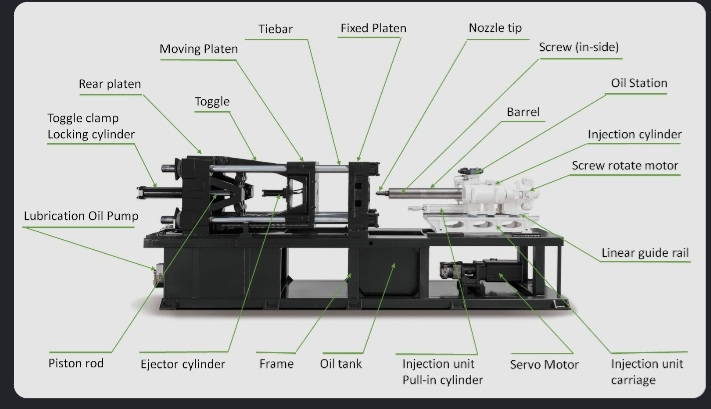

🏭 ক্যাপ সেকশন

মেশিন ১: HQT 2800
এই মেশিনে তিনটি প্রোডাক্ট চলে।
আপার ক্যাপ (Upper Cap)
হট রানার মোল্ড। এখানে রানার থাকে না।
মিক্সার: ২৫ কেজি HDPE + ১৫০ গ্রাম কালার
ওজন: ৩.৭ গ্রাম
লোয়ার ক্যাপ (Lower Cap)
মিক্সার: ২৫ কেজি LDPE + ৫ কেজি HDPE + ১৮ কেজি ক্র্যাশ + ৫০০ গ্রাম কালার
ওজন: ৭.৪ গ্রাম
৩/৫ লিটার স্ক্রু ক্যাপ (Screw Cap)
মিক্সার: ২৫ কেজি HDPE + ১৮ কেজি ক্র্যাশ + ১৫০ গ্রাম কালার
ওজন (৫ লিটার): ৫ গ্রাম
মেশিন ২: HT 250
এই মেশিনে হ্যান্ডেল চলে।
৫ লিটার হ্যান্ডেল (5 Ltr Handle)
মিক্সার: ২৫ কেজি LDPE + ৬ কেজি HDPE + ১৮ কেজি ক্র্যাশ + ৫০০ গ্রাম কালার
ওজন: ৭.২ গ্রাম
২ লিটার হ্যান্ডেল (2 Ltr Handle)
মিক্সার: ২৫ কেজি LDPE + ২৫০ গ্রাম কালার
ওজন: ৩.৩৪ গ্রাম
⚙️ মেশিনের পার্টস ও কাজ
১. ক্ল্যাম্পিং ইউনিট (মোল্ড বন্ধ ও খোলার অংশ)
Fixed Platen (ফিক্সড প্লেটেন)
নোজলের দিকের স্থির প্লেট। মোল্ডের একটা অর্ধেক এখানে লাগানো থাকে। এটা নড়ে না।
Moving Platen (মুভিং প্লেটেন)
সামনে-পিছনে চলে। মোল্ডের অন্য অর্ধেক এখানে লাগানো থাকে। এটা সরে মোল্ড খোলে ও বন্ধ করে।
Rear Platen (রিয়ার প্লেটেন)
ক্ল্যাম্পিং ইউনিটের পিছনের প্লেট। টগল মেকানিজম আর লকিং সিলিন্ডারকে ধরে রাখে।
Tiebar (টাইবার)
মোটা স্টিলের রড। প্লেটগুলোকে যুক্ত রাখে এবং মুভিং প্লেটেনকে সোজা পথে চলতে সাহায্য করে। ইনজেকশনের সময় মোল্ড যেন খুলে না যায়, সেই চাপও সামলায়।
Toggle (টগল)
হাতের মতো ভাঁজ হওয়া লিঙ্ক। সোজা হলে মোল্ড শক্ত করে লক হয়, ভাঁজ হলে মোল্ড খোলে। অল্প বলে বেশি ক্ল্যাম্পিং ফোর্স তৈরি করে।
Toggle Clamp / Locking Cylinder (লকিং সিলিন্ডার)
হাইড্রলিক তেলের চাপে টগলকে সোজা বা ভাঁজ করে। এতেই মোল্ড বন্ধ, লক ও খোলা হয়।
Piston Rod (পিস্টন রড)
সিলিন্ডারের ভেতরের রড। সিলিন্ডারের ধাক্কা টগল মেকানিজমে পৌঁছে দেয়।
Ejector Cylinder (ইজেক্টর সিলিন্ডার)
মোল্ড খোলার পর ইজেক্টর পিন সামনে ঠেলে। এতে তৈরি হওয়া ক্যাপ মোল্ড থেকে বেরিয়ে আসে।
২. ইনজেকশন ইউনিট (প্লাস্টিক গলিয়ে ঢোকানোর অংশ)
Barrel (ব্যারেল)
গরম নল। ভেতরে স্ক্রু ঘোরে। বাইরের হিটার ব্যারেলকে গরম করে প্লাস্টিক গলায়।
Screw (স্ক্রু)
ব্যারেলের ভেতরের স্ক্রু। ঘুরে দানা সামনে ঠেলে, গলায় এবং রং ও কেমিক্যাল ভালোভাবে মেশায়। পরে সামনে ধাক্কা দিয়ে গলা প্লাস্টিক মোল্ডে ঢোকায়।
Nozzle Tip (নজল টিপ)
ব্যারেলের সামনের মুখ। এখান দিয়ে গলা প্লাস্টিক মোল্ডে ঢোকে। এটা খুব গরম থাকে, হাত দেবেন না।
Screw Rotate Motor (স্ক্রু রোটেট মোটর)
স্ক্রুকে ঘোরায়। এর গতির ওপর প্লাস্টিক গলা ও মেশার মান নির্ভর করে।
Injection Cylinder (ইনজেকশন সিলিন্ডার)
স্ক্রুকে সামনে ঠেলে গলা প্লাস্টিক মোল্ডে ঢোকায়। ইনজেকশন প্রেসার ও স্পিড এর ওপর নির্ভর করে।
Injection Unit Carriage (ক্যারিজ)
পুরো ইনজেকশন ইউনিট যে প্লেটের ওপর বসানো থাকে। এটা সামনে-পিছনে সরে।
Injection Unit Pull-in Cylinder (পুল-ইন সিলিন্ডার)
ইনজেকশন ইউনিটকে সামনে এনে নজলকে মোল্ডের সাথে চেপে ধরে, আবার পিছনে সরিয়েও নেয়।
Linear Guide Rail (লিনিয়ার গাইড রেল)
ইনজেকশন ইউনিট যে রেলের ওপর দিয়ে সোজা পথে মসৃণভাবে চলে।
৩. হাইড্রলিক ও চালনা সিস্টেম
Oil Tank (অয়েল ট্যাংক)
হাইড্রলিক তেল জমা থাকে। শুরুর আগে অয়েল লেভেল দেখে নিন।
Oil Station (অয়েল স্টেশন)
তেলের চাপ ও প্রবাহ নিয়ন্ত্রণ করে এবং বিভিন্ন সিলিন্ডারে তেল পাঠায়।
Servo Motor (সার্ভো মোটর)
হাইড্রলিক সিস্টেমের পাম্প চালায়। দরকার মতো গতি ও চাপ দেয়, ফলে বিদ্যুৎ কম লাগে। (মেশিনের মডেল ভেদে কাজ সামান্য আলাদা হতে পারে।)
Lubrication Oil Pump (লুব্রিকেশন অয়েল পাম্প)
টগল ও চলমান অংশে গ্রিজ বা তেল পৌঁছে দেয়, যাতে ক্ষয় কম হয় এবং মেশিন মসৃণ চলে।
৪. ফ্রেম
Frame (ফ্রেম)
পুরো মেশিনের শক্ত ভিত্তি। সব অংশ এর ওপর বসানো থাকে।
🔧 হাইড্রলিক ভালভ ও পাইপ
১. ভালভ
Pressure Relief Valve (প্রেসার রিলিফ ভালভ)
সিস্টেমের সর্বোচ্চ চাপ সীমায় রাখে। চাপ বেশি হলে বাড়তি তেল ট্যাংকে ফেরত পাঠায়, ফলে পাইপ, পাম্প আর সিলিন্ডার ফাটা থেকে বাঁচে।
Directional Control Valve / Solenoid Valve (ডিরেকশনাল ভালভ)
তেল কোন দিকে যাবে ঠিক করে। কয়েল অন হলে ভালভ সরে তেলের পথ বদলায়। এতেই সিলিন্ডার সামনে বা পিছনে যায়, মোল্ড খোলে ও বন্ধ হয়।
Proportional Pressure Valve (প্রপোরশনাল প্রেসার ভালভ)
স্ক্রিনে সেট করা প্রেসার অনুযায়ী তেলের চাপ কমায় বা বাড়ায়। ইনজেকশন প্রেসার, হোল্ডিং প্রেসার আর ক্ল্যাম্প প্রেসার এভাবে নিয়ন্ত্রণ হয়।
Proportional Flow Valve (প্রপোরশনাল ফ্লো ভালভ)
তেলের প্রবাহ নিয়ন্ত্রণ করে। এর ওপর ইনজেকশন স্পিড, মোল্ড খোলা-বন্ধের স্পিড নির্ভর করে।
Flow Control Valve (ফ্লো কন্ট্রোল ভালভ)
হাতে বা সেটিং দিয়ে তেলের প্রবাহ কমায়-বাড়ায়, ফলে সিলিন্ডারের গতি ঠিক থাকে।
Check Valve (চেক ভালভ)
তেলকে শুধু একদিকে যেতে দেয়, উল্টো দিকে ফিরতে দেয় না। চাপ ধরে রাখতে সাহায্য করে।
Pilot Operated Check Valve (পাইলট চেক ভালভ)
সাধারণত তেল ফিরতে দেয় না, কিন্তু পাইলট চাপ পেলে খুলে যায়। ক্ল্যাম্প বা ইজেক্টরকে জায়গায় ধরে রাখতে কাজে লাগে।
Sequence Valve (সিকোয়েন্স ভালভ)
এক কাজ শেষ হয়ে নির্দিষ্ট চাপে পৌঁছালে পরের কাজ শুরু করায়। যেমন মোল্ড বন্ধ হওয়ার পর পরের ধাপ চালু করা।
Counterbalance Valve (কাউন্টারব্যালান্স ভালভ)
ভারী অংশ নিজের ওজনে হঠাৎ নেমে বা সরে যাওয়া আটকায়। চলাচল নিয়ন্ত্রিত ও মসৃণ রাখে।
Cartridge Valve (কার্ট্রিজ ভালভ)
ছোট আকারের ভালভ, ব্লকের ভেতরে বসানো থাকে। বড় প্রবাহ কম জায়গায় নিয়ন্ত্রণ করে।
Servo Valve (সার্ভো ভালভ)
খুব সূক্ষ্মভাবে প্রবাহ ও চাপ নিয়ন্ত্রণ করে। নিখুঁত ইনজেকশনের মেশিনে থাকে।
Accumulator (অ্যাকুমুলেটর)
চাপযুক্ত তেল জমিয়ে রাখে। দ্রুত ইনজেকশনের সময় বাড়তি তেল দেয়, ফলে স্পিড বাড়ে। (এটা ভালভ নয়, তবে হাইড্রলিক সিস্টেমের অংশ।)
২. পাইপ ও লাইন
Pressure Line (প্রেসার পাইপ)
পাম্প থেকে ভালভ ও সিলিন্ডারে উচ্চ চাপের তেল নিয়ে যায়। সবচেয়ে মোটা ও শক্ত পাইপ। এটা খুব বিপজ্জনক।
Return Line (রিটার্ন পাইপ)
কাজ শেষে ব্যবহৃত তেল ট্যাংকে ফেরত আনে। এর চাপ কম।
Suction Line (সাকশন পাইপ)
ট্যাংক থেকে পাম্পে তেল টেনে আনে। এটা আটকে বা লিক হলে পাম্প শব্দ করে।
Drain Line (ড্রেন পাইপ)
ভালভ ও পাম্পের ভেতরে জমা লিক হওয়া তেল আলাদা করে ট্যাংকে ফেরত পাঠায়।
Pilot Line (পাইলট পাইপ)
ছোট পাইপ। অন্য ভালভ খোলা বা বন্ধ করার জন্য সংকেতের চাপ বহন করে।
Hydraulic Hose (হাইড্রলিক হোস)
নমনীয় রাবারের পাইপ। চলমান অংশে (যেমন ইনজেকশন ইউনিট) ব্যবহার হয়। ফাটা বা ফোলা দেখলে সঙ্গে সঙ্গে বদলাতে হয়।
Cooling Water Line (কুলিং ওয়াটার পাইপ)
মোল্ড, অয়েল কুলার আর ফিড থ্রোটে ঠান্ডা পানি পৌঁছে দেয়। এটা তেলের পাইপ নয়।
৩. সহায়ক অংশ
Oil Filter (অয়েল ফিল্টার)
তেলের ময়লা ছেঁকে ফেলে, ফলে ভালভ ও পাম্প ভালো থাকে। নির্দিষ্ট সময় পর বদলাতে হয়।
Oil Cooler (অয়েল কুলার)
তেল বেশি গরম হলে ঠান্ডা করে। তেল বেশি গরম হলে তা পাতলা হয়ে যায় এবং সিল নষ্ট হয়।
Pressure Gauge (প্রেসার গেজ)
সিস্টেমে তেলের চাপ দেখায়।
Hydraulic Pump (হাইড্রলিক পাম্প)
মোটরের শক্তিতে তেলে চাপ তৈরি করে। পুরো সিস্টেমের হৃৎপিণ্ড।
⚠ হাইড্রলিক সাবধানতা
- চাপ থাকা অবস্থায় কখনো পাইপ বা ফিটিং খুলবেন না। আগে মেশিন বন্ধ করে চাপ ছেড়ে দিন।
- পাইপের লিক হাত দিয়ে খুঁজবেন না। উচ্চ চাপের তেল চামড়া ভেদ করে ঢুকতে পারে।
- গরম তেল ও গরম পাইপে হাত দেবেন না।
- লিক বা ফাটা হোস দেখলে সুপারভাইজারকে জানান।
⚠ নিরাপত্তার নিয়ম
- সেফটি ডোর খোলা অবস্থায় কখনো মেশিন চালাবেন না।
- ব্যারেল আর নজল খুব গরম থাকে, হাত দিয়ে ধরবেন না। গ্লাভস পরবেন।
- মোল্ডের ভেতরে হাত দেওয়ার আগে মেশিন বন্ধ করুন।
- ইমার্জেন্সি স্টপ বাটন কোথায় আছে আগে থেকে জেনে রাখুন।
- গরম প্লাস্টিক (পার্জ) হাতে লাগলে ঠান্ডা পানি দিন এবং ডাক্তার দেখান।
- মেশিনের সেফটি সুইচ বা গার্ড কখনো বন্ধ করে রাখবেন না।
▶ মেশিন চালু করার ধাপ
- সেফটি ডোর, গার্ড আর ইমার্জেন্সি স্টপ ঠিক আছে কিনা দেখুন।
- হাইড্রলিক অয়েল লেভেল আর কুলিং ওয়াটার আছে কিনা দেখুন।
- মেইন পাওয়ার সুইচ অন করুন, তারপর অয়েল পাম্প অন করুন।
- ব্যারেল হিটার অন করে তাপমাত্রা সেট করুন। তাপমাত্রা পৌঁছাতে সময় দিন (সাধারণত ১৫ থেকে ৩০ মিনিট)।
- মোল্ডের কুলিং ওয়াটার চালু করুন। মোল্ড পরিষ্কার আছে কিনা দেখুন।
- হপারে কাঁচামাল দিন (যেমন PP বা HDPE)। দরকার হলে আগে ড্রায়ারে শুকিয়ে নিন।
- তাপমাত্রা ঠিক হলে ম্যানুয়াল মোডে পার্জ করুন, যতক্ষণ পরিষ্কার প্লাস্টিক না আসে।
- ইনজেকশন প্রেসার, স্পিড, হোল্ডিং টাইম আর কুলিং টাইম সেট করুন।
- সেমি-অটো মোডে কয়েকটি শট দিয়ে ক্যাপ ঠিক হচ্ছে কিনা দেখুন।
- সব ঠিক থাকলে অটো মোডে চালান।
■ মেশিন বন্ধ করার ধাপ
- অটো মোড বন্ধ করে ম্যানুয়াল মোডে যান।
- হপার থেকে কাঁচামাল সরিয়ে নিন।
- ব্যারেলে থাকা প্লাস্টিক পার্জ করে বের করুন।
- ব্যারেল হিটার বন্ধ করুন।
- মোল্ডে মরিচা রোধের স্প্রে দিন (দরকার হলে)।
- মোল্ড খোলা রাখুন এবং কুলিং ওয়াটার বন্ধ করুন।
- অয়েল পাম্প বন্ধ করুন, তারপর মেইন পাওয়ার বন্ধ করুন।
🔧 সমস্যা হলে কী করবেন
ক্যাপ পুরো ভরে না (Short shot)
ইনজেকশন প্রেসার বা স্পিড বাড়ান। ব্যারেলের তাপমাত্রা একটু বাড়ান। কাঁচামাল ঠিক আছে কিনা দেখুন।
ক্যাপের কিনারা দিয়ে বাড়তি প্লাস্টিক বের হয় (Flash)
ইনজেকশন প্রেসার বা হোল্ডিং প্রেসার কমান। মোল্ডের দুই অংশ ঠিকমতো লাগছে কিনা দেখুন। ক্ল্যাম্প ফোর্স দেখুন।
ক্যাপের উপর দাগ বা গর্ত (Sink mark)
হোল্ডিং প্রেসার বা হোল্ডিং টাইম বাড়ান। কুলিং টাইম বাড়ান।
ক্যাপে কালো দাগ (Burn mark)
ইনজেকশন স্পিড কমান। ব্যারেলের তাপমাত্রা কমান। মোল্ডের এয়ার ভেন্ট পরিষ্কার করুন।
ক্যাপ বেঁকে যায় (Warping)
কুলিং টাইম বাড়ান। মোল্ডের তাপমাত্রা ঠিক আছে কিনা দেখুন।
ক্যাপ মোল্ডে আটকে থাকে
কুলিং টাইম বাড়ান। ইজেক্টর ঠিকমতো কাজ করছে কিনা দেখুন।
এটি একটি সাধারণ গাইড। সবসময় আপনার নিজের মেশিনের ম্যানুয়াল আর সিনিয়র অপারেটরের নিয়ম আগে মেনে চলুন।